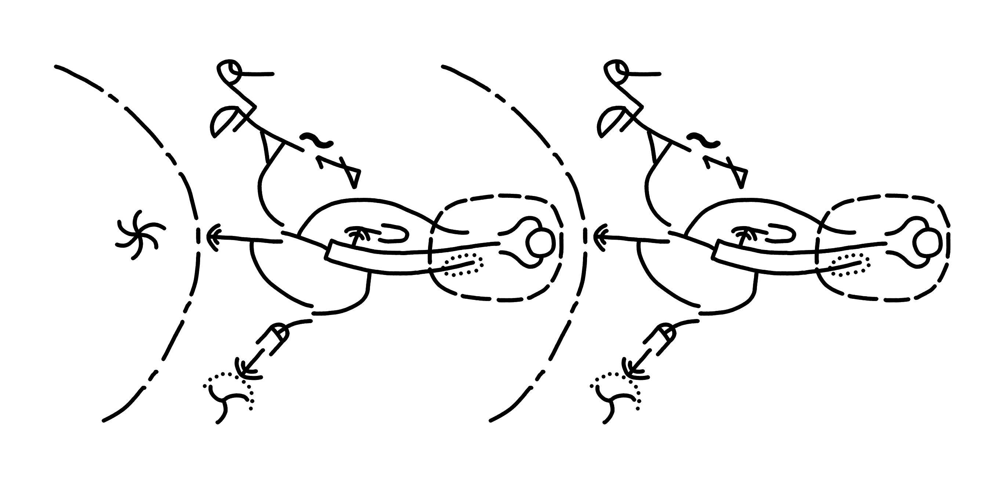

My native language. I don't use it as much as I feel I should. Since I mostly consume English media and I found my interests through English, there are a lot of things I love that I don't know how to talk about in Latvian. Since my interests are, uh, somewhat niche, a lot of them just don't have terminology in Latvian.
I think the perception that there's a right way to speak Latvian does more harm than good. That seems to be what Latvian class in school is pushing. I hope to use Latvian a bit more experimentally on this site and in general, to come up with new words, to extend grammar that can be extended, maybe even to welcome grammar influence from English and Russian if it's productive, and borrow terms if I can't come up with anything better.
Learned it from cartoons back during kindergarten, and then from letsplayers. Now most of the content I consume is in English and I think in English most of the time. This is at least a little unusual; unlike for others, English class was easy for me.
Back before I was interested in languages we had to learn it in school. I didn't care and cheating was easy, so I still don't know it. A shame, since Russian is actually useful in Latvia, unlike German. There are friend groups in school and uni that talk in Latvian and ones that talk in Russian, which I can't participate in.
I ended up taking German. Since Conlang Critic (jan Misali) got me interested in languages, I decided to actually try, and used Duolingo in parallel. I learned way more than I did in Russian, but it's not like I have anywhere to use it and I probably wouldn't be conversational anyway.
It's a conlang made by Sonja Lang. It's got about 140 words. I found out about it from jan Misali and got interested in it (and kulupu jan tenpo gave sorta introduction) so I started learning in 2021. I lurk on ma pona pi toki pona, the biggest toki pona Discord server
I've worked on translating Terraria and tried to translate Lookouts, though I haven't really published that yet. I collected songs I like to listen to in a Youtube playlist.
I chose the name jan Talisoso for myself in toki pona. jan means person.
Unker Non–Linear Writing System is a nonlinear constructed language made by Alex Fink and Sai. It's nonlinear, meaning that instead of words being chained one after another in one long line, they can connect in more interesting ways like junctions and loops. Related concepts can be placed together and can be loosely connected with other, more distant concepts.
Probably the coolest thing I've made in UNLWS is this text. I'd say "try to read it" but it's very very difficult.
It's a quine. It tells you to write the same text again. An English equivalent would be "Write the text "Write the text "★" but replace the first ★ with the whole text." but replace the first ★ with the whole text."
Meaning
I made a tutorial for it. You can figure out a good few things just by looking and comparing and thinking, but it's meant as a supplement to the documentation.
Learned a bit for and during Erasmus. I chose Turkey partially because the language isn't Indo–European, so I could get a sense for what languages are like more broadly. I made pretty quick progress, but I'm not conversational.
Inspired by The New Yorker's article I made an attempt to learn v4. I made my own Anki deck for the roots, read a bunch of the grammar. Unsurprisingly it's confusing, and I could never really find the motivation to read or write texts, which is, um, kind of important for learning, so I never got anywhere. Maybe I know more linguistics stuff than I did then so it would be easier now...
A sign language based on toki pona. Also very minimalistic, but the grammar is like actual sign languages. I can sorta use it.
Inspired by luka pona, I looked into it, perused the online dictionary a bunch, read the (very limited) grammar document (Latvian) on it. I'm largely learning it out of linguistic curiosity, but who knows, I might do something good with it some day.
Based on toki pona, tuki tiki is even more minimalistic with only 39 words. I sorta learned it when ma pona did an April fool's event with it.